Installation d'un site web
Pour commencer nous avons installé Apache2, via la commande apt install. C’est Apache que nous utiliserons en tant que serveur.
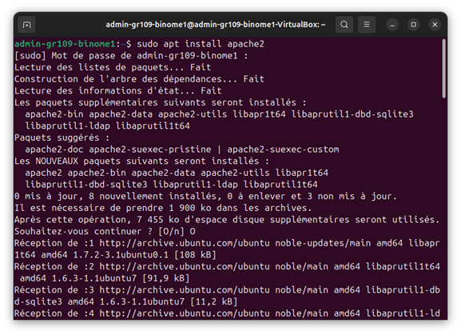On peut vérifier qu'Apache2 marche en utilisant la commande systemctl status. On voit ici que le serveur Apache est bien actif.
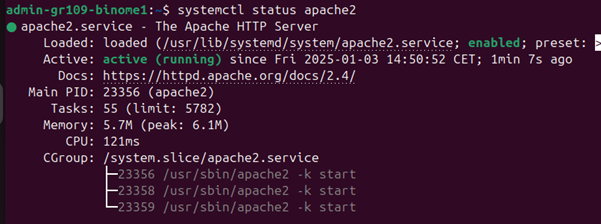On peut même le vérifier en allant sur un navigateur. Il nous faut l’IP de notre machine virtuelle, on utilise la commande ip –a pour l’obtenir. Ensuite, on se rend sur notre navigateur et on tape l’ip, on voit que l’on arrive bien sur la page par défault d’Apache
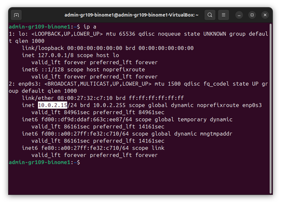 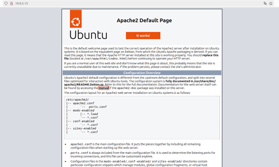Vu que nous avions oublié de mettre en place un server SSH, nous le créons maintenant, et passons la machine en mode pont, elle était jusqu’ici en mode NAT, d’où l’adresse IP assez spéciale.
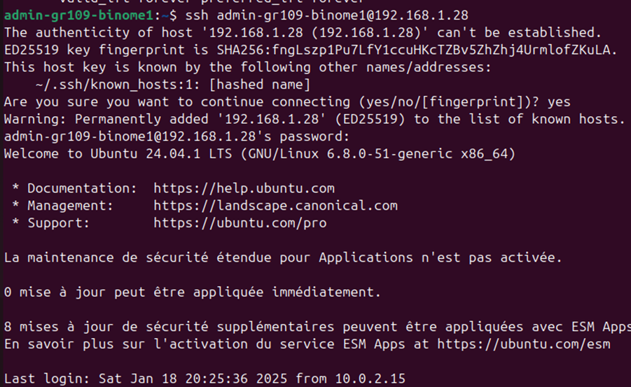On crée ensuite un fichier Site_SAE.fr dans le home de notre utilisateur, ou sera accueillit les fichiers de notre site web. On crée ensuite un lien dans srv vers ce fichier.
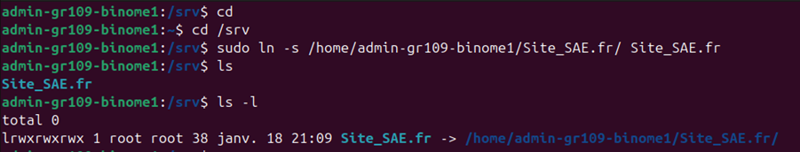On donne également les permissions de lecture et d’exécutions a others pour que le serveur puisse accéder au fichier de notre utilisateur.
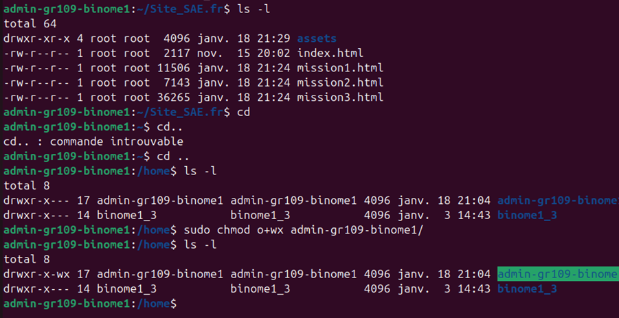On effectue les redirections qu’il faut dans les fichiers config d’apache, en redirigeant vers le lien et enlevant le fait qu’Apache agisse comme un explorateur de fichier.
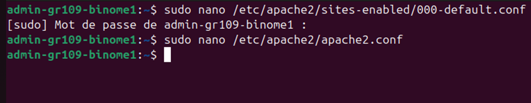 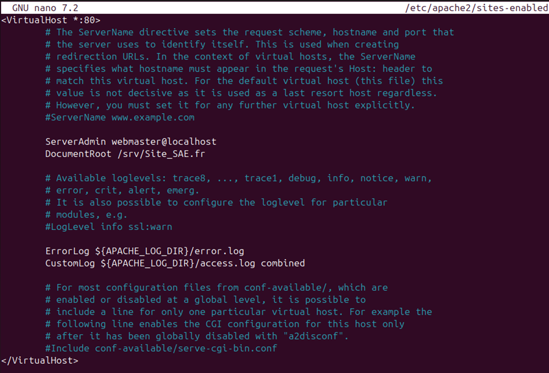On se rend finalement sur Webstorm, pour créer un nouveau deployment SFTP, avec les configurations montrées sur l’image.
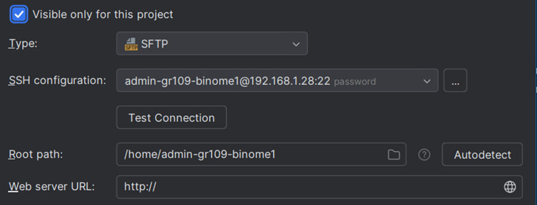Voici la configuration SSH :
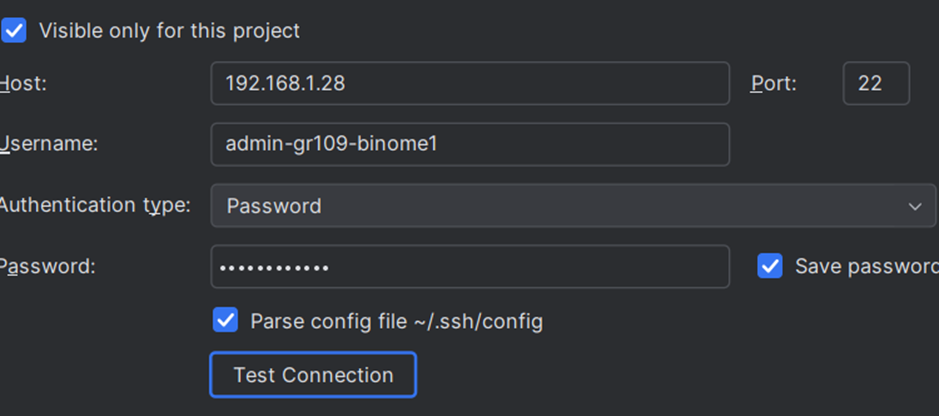Pour finir, on upload nos fichiers sur la machine virtuelle (ici on utilise notre site web de BDD réalisé en période A pour tester). On vérifie que les fichiers sont bien présents sur notre machine virtuelle.
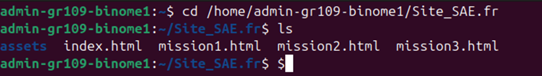On relance maintenant le serveur Apache, et lorsqu’on se rend sur l’IP de notre machine, le site apparait!
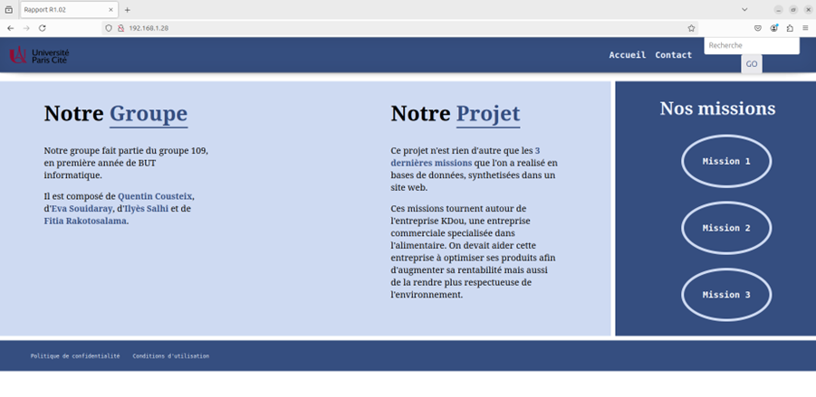